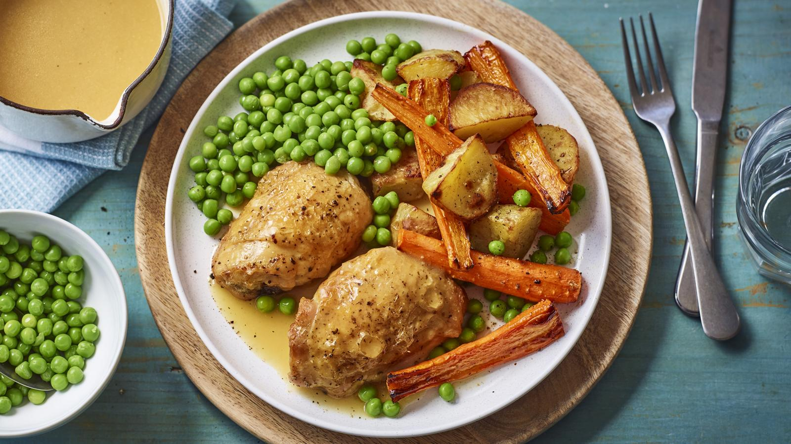

Roast chicken recipe

Roast chicken dinner for one.
Batch cooking a pack of chicken thighs is the most cost effective way to make this recipe and the leftover chicken can be used later in the week.
Ingredients
1 serving
- 1 large baking potato or 2–3 medium potatoes), peeled and cut into roughly in chunks
- 2–3 carrots, peeled and cut in half lengthways (or quarters if they are very large)
- 3 tbsp vegetable oil
- 2 chicken thighs, bone in and skin on (see recipe tip, below, if cooking as part of the meal plan
- Extra-virgin olive oil or vegetable oil
For the simple gravy
- 1 tbsp vegetable oil
- 1 tbsp plain flour
- 175ml hot chicken stock
- 1 tsp soy sauce
Steps
- Preheat the oven to 210C/190C Fan/Gas
- Put the potatoes and carrots in a roasting tin or scatter over a large baking tray. (If cooking 6 chicken thighs at once as part of the budget meal plan, you will need a large tin.) Drizzle with the oil and toss together well.
- Add the chicken to the tin, skin-side up, and sprinkle with the herbs. Season the chicken and vegetables with a little salt and lots of pepper. Roast for 35–40 minutes, or until the chicken is cooked through and golden brown and the vegetables are tender. Turn the vegetables after they have been roasting for 20 minutes. The chicken is cooked through when the juices run clear with no trace of pink when it is pierced with the tip of a knife.
- Meanwhile, ten minutes before the chicken is ready, make the gravy. Pour the oil into a small saucepan and stir in the flour with a wooden spoon. Place over a medium heat and slowly add the chicken stock, just a little at a time, stirring constantly (for extra tasty gravy, see the tip below). Add the soy sauce for a little extra colour and simmer gently for 2–3 minutes or until thickened, stirring occasionally.
- Cook the peas according to the packet instructions and drain.
- Put 2 chicken thighs on a plate with the roasted potatoes and carrots, add the peas and pour over a little of the gravy. Serve the rest of the gravy separately. If you have cooked extra chicken thighs, set the other thighs aside to cool, then cover and keep in the fridge for up to 2 days. To freeze, remove the skin and bone and freeze the chicken meat in a lidded container or freezer bag for up to 1 month.
Home